Intrepid2::FunctionSpaceTools is a stateless class of expertmethods for operations on finite element subspaces of , , and 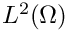. In Intrepid these spaces are referred to as HGRAD, HCURL, HDIV and HVOL. There are four basic groups of methods:
Transformation methods provide implementation of pullbacks for HGRAD, HCURL, HDIV and HVOL finite element functions. Thease are essentialy the "change of variables rules" needed to transform values of basis functions and their derivatives defined on a reference element to a physical element . See Section Pullbacks for details
Measure computation methods implement the volume, surface and line measures required for computation of integrals in the physical frame by changing variables to reference frame. See Section Measure for details.
Integration methods implement the algebraic operations to compute ubiquitous integrals of finite element functions: integrals arising in bilinear forms and linear functionals.
Methods for algebraic and vector-algebraic operations on multi-dimensional arrays with finite element function values. These methods are used to prepare multidimensional arrays with data and finite element function values for the integration routines. They also include evaluation methods to compute finite element function values at some given points in physical frame; see Section Evaluation of finite element fields.
Pullbacks
Notation in this section follows the standard definition of a finite element space by Ciarlet; see The Finite Element Method for Elliptic Problems, Classics in Applied Mathematics, SIAM, 2002. Given a reference cell 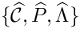 with a basis 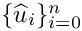, the basis 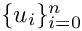 of 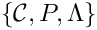 is defined as follows:
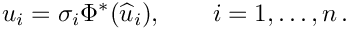
In this formula 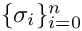, where 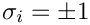, are the fieldsigns, and 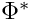 is the pullback ("change of variables") transformation. For scalar spaces such as HGRAD and HVOL the field signs are always equal to 1 and can be disregarded. For vector field spaces such as HCURL or HDIV, the field sign of a basis function can be +1 or -1, depending on the orientation of the physical edge or face, associated with the basis function.
The actual form of the pullback depends on which one of the four function spaces HGRAD, HCURL, HDIV and HVOL is being approximated and is computed as follows. Let 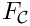 denote the reference-to-physical map (see Section Reference-to-physical cell mapping); is its Jacobian (see Section Jacobian of the reference-to-physical cell mapping) and 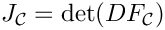. Then,
Intrepid supports pullbacks only for cell topologies that have reference cells; see Reference cells.
Measure
In Intrepid integrals of finite element functions over cells, 2-subcells (faces) and 1-subcells (edges) are computed by change of variables to reference frame and require three different kinds of measures.
To make this example more specific, assume curl-conforming finite element spaces. Suppose that we have a physical cell with a basis 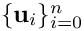. A finite element function on this cell is defined by a set of n coefficients 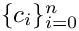:
The final step is to compute the sum of the transformed and signed basis function values multiplied by the coefficients of the finite element function using Intrepid2::FunctionSpaceTools::evaluate.
Evaluation of adimssible derivatives of finite element functions is completely analogous and follows the same four steps. Evaluation of scalar finite element functions is simpler because application of the signes can be skipped for these functions.
Evaluation of finite element operators and functionals
Assume the same setting as in Section Evaluation of finite element fields. A finite element operator defined by the finite element basis on the physical cell is a matrix
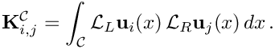
where and are left and right operators acting on the basis functions. Typically, when the left and the right basis functions are from the same finite element basis (as in this example), the left and right operators are the same. If they are set to VALUE we get a mass matrix; if they are set to an admissible differential operator we get a stiffnesss matrix. Assume again that the basis is curl-conforming and the operators are set to VALUE. Using the basis definition from Section Pullbacks we have that
![\[
\begin{array}{ll}
\Phi^*_G : HGRAD(\widehat{{\mathcal C}}) \mapsto HGRAD({\mathcal C})&
\qquad \Phi^*_G(\widehat{u}) = \widehat{u}\circ F^{-1}_{\mathcal C} \\[2ex]
\Phi^*_C : HCURL(\widehat{{\mathcal C}}) \mapsto HCURL({\mathcal C})&
\qquad \Phi^*_C(\widehat{\bf u}) = \left((DF_{\mathcal C})^{-{\sf T}}\cdot\widehat{\bf u}\right)\circ F^{-1}_{\mathcal C} \\[2ex]
\Phi^*_D : HDIV(\widehat{{\mathcal C}}) \mapsto HDIV({\mathcal C})&
\qquad \Phi^*_D(\widehat{\bf u}) = \left(J^{-1}_{\mathcal C} DF_{\mathcal C}\cdot\widehat{\bf u}\right)\circ F^{-1}_{\mathcal C}
\\[2ex]
\Phi^*_S : HVOL(\widehat{{\mathcal C}}) \mapsto HVOL({\mathcal C})&
\qquad \Phi^*_S(\widehat{u}) = \left(J^{-1}_{\mathcal C} \widehat{u}\right) \circ F^{-1}_{\mathcal C} \,.
\end{array}
\]](form_163_dark.png)